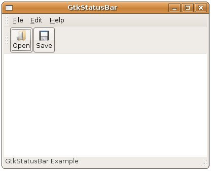

狀態列通常位於視窗的底部，用以顯示目前視窗操作狀況的一些簡單訊息，在GTK中的狀態列元件是GtkStatusBar，您可以使用gtk_statusbar_new()來建立。
視窗中各個元件或操作都可以有相對應的狀態訊息，為了讓狀態列區別哪個訊息屬於哪個元件或操作，GtkStatusBar使用Context
ID來加以識別，您可以使用gtk_statusbar_get_context_id()並給定一個名稱以取得對應的Context ID，例如：
GtkWidget *statusbar;
gint contextId;
statusbar = gtk_statusbar_new();
contextId = gtk_statusbar_get_context_id(
GTK_STATUSBAR(statusbar), "Editor Messages");
取得Context ID之後，若要向GtkStatusBar加入或移除狀態訊息，可以使用以下的幾個函式：
guint gtk_statusbar_push(GtkStatusbar *statusbar,
guint context_id,
const gchar *text);
void gtk_statusbar_pop(GtkStatusbar *statusbar,
guint context_id);
void gtk_statusbar_remove(GtkStatusbar *statusbar,
guint context_id,
guint message_id);
GtkStatusBar的訊息採堆疊（Stack）儲存，採後進先出的方式，若要加入訊息，則使用gtk_statusbar_push()，這會傳回
一個message_id，您可以根據message_id與context_id使用gtk_statusbar_remove()函式指定刪除該訊
息，而gtk_statusbar_pop()則是直接刪除Context ID所對應的堆疊訊息中最上面的訊息。
下面的程式以 GtkToolBar 為基礎，增加一個 GtkTextView 與 GtkStatusBar，讓執行後的外觀更像一個視窗程式文字編輯器：
#include <gtk/gtk.h>
void itemPressed(GtkMenuItem *menuItem, gpointer data) {
g_print("%s\n", data);
}
GtkWidget* createFileMenuItem() {
GtkWidget *rootFileItem;
GtkWidget *fileMenu;
GtkWidget *openMenuItem;
GtkWidget *saveMenuItem;
GtkWidget *closeMenuItem;
rootFileItem = gtk_menu_item_new_with_mnemonic("_File");
fileMenu = gtk_menu_new();
openMenuItem = gtk_menu_item_new_with_label("Open");
saveMenuItem = gtk_menu_item_new_with_label("Save");
closeMenuItem = gtk_menu_item_new_with_label("Close");
gtk_menu_shell_append(GTK_MENU_SHELL(fileMenu), openMenuItem);
gtk_menu_shell_append(GTK_MENU_SHELL(fileMenu), saveMenuItem);
gtk_menu_shell_append(GTK_MENU_SHELL(fileMenu),
gtk_separator_menu_item_new());
gtk_menu_shell_append(GTK_MENU_SHELL(fileMenu), closeMenuItem);
gtk_menu_item_set_submenu(GTK_MENU_ITEM(rootFileItem), fileMenu);
g_signal_connect(GTK_OBJECT(openMenuItem), "activate",
G_CALLBACK(itemPressed), "Open ....");
g_signal_connect(GTK_OBJECT(saveMenuItem), "activate",
G_CALLBACK(itemPressed), "Save ....");
g_signal_connect(GTK_OBJECT(closeMenuItem), "activate",
G_CALLBACK(gtk_main_quit), NULL);
return rootFileItem;
}
// 建立一個內含按鈕、文字與圖片的GtkToolItem
GtkToolItem* createToolItem(gchar *stock_id, gchar *text) {
GtkToolItem *open;
GtkWidget *box;
GtkWidget *label;
GtkWidget *image;
GtkWidget *button;
open = gtk_tool_item_new();
gtk_tool_item_set_tooltip_text(open, "Open File..");
box = gtk_vbox_new(FALSE, 0);
image = gtk_image_new_from_stock(stock_id, GTK_ICON_SIZE_SMALL_TOOLBAR);
label = gtk_label_new(text);
gtk_box_pack_start(GTK_BOX(box), image, FALSE, FALSE, 0);
gtk_box_pack_start(GTK_BOX(box), label, FALSE, FALSE, 0);
button = gtk_button_new();
gtk_container_add(GTK_CONTAINER(button), box);
gtk_container_add(GTK_CONTAINER(open), button);
return open;
}
int main(int argc, char *argv[]) {
GtkWidget *window;
GtkWidget *menubarBox;
GtkWidget *toolbarBox;
GtkWidget *vbox;
GtkWidget *menubar;
GtkWidget *toolbar;
GtkWidget *statusbar;
gint contextId;
gtk_init(&argc, &argv);
window = gtk_window_new(GTK_WINDOW_TOPLEVEL);
gtk_window_set_title(GTK_WINDOW(window), "GtkStatusBar");
gtk_window_set_default_size(GTK_WINDOW(window), 400, 300);
menubar = gtk_menu_bar_new();
gtk_menu_bar_append(menubar, createFileMenuItem());
gtk_menu_bar_append(menubar, gtk_menu_item_new_with_mnemonic("_Edit"));
gtk_menu_bar_append(menubar, gtk_menu_item_new_with_mnemonic("_Help"));
vbox = gtk_vbox_new(FALSE, 0);
menubarBox = gtk_handle_box_new();
gtk_container_add(GTK_CONTAINER(menubarBox), menubar);
gtk_box_pack_start(GTK_BOX(vbox), menubarBox, FALSE, FALSE, 0);
toolbar = gtk_toolbar_new();
gtk_toolbar_insert(GTK_TOOLBAR(toolbar),
createToolItem(GTK_STOCK_OPEN, "Open"), 0);
gtk_toolbar_insert(GTK_TOOLBAR(toolbar),
createToolItem(GTK_STOCK_SAVE, "Save"), 1);
toolbarBox = gtk_handle_box_new();
gtk_container_add(GTK_CONTAINER(toolbarBox), toolbar);
gtk_box_pack_start(GTK_BOX(vbox), toolbarBox, FALSE, FALSE, 0);
gtk_box_pack_start(GTK_BOX(vbox), gtk_text_view_new(), TRUE, TRUE, 0);
statusbar = gtk_statusbar_new();
contextId = gtk_statusbar_get_context_id(
GTK_STATUSBAR(statusbar), "Editor Messages");
gtk_statusbar_push(GTK_STATUSBAR(statusbar),
contextId, "GtkStatusBar Example");
gtk_box_pack_start(GTK_BOX(vbox), statusbar, FALSE, FALSE, 0);
gtk_container_add(GTK_CONTAINER(window), vbox);
g_signal_connect(GTK_OBJECT(window), "destroy",
G_CALLBACK(gtk_main_quit), NULL);
gtk_widget_show_all(window);
gtk_main();
return 0;
}
執行的結果畫面如下所示：

|
|